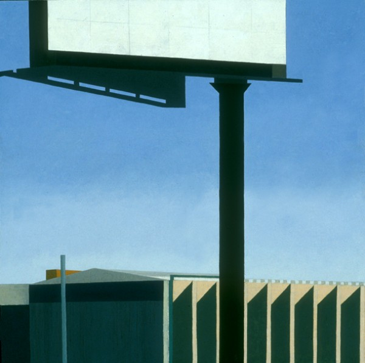
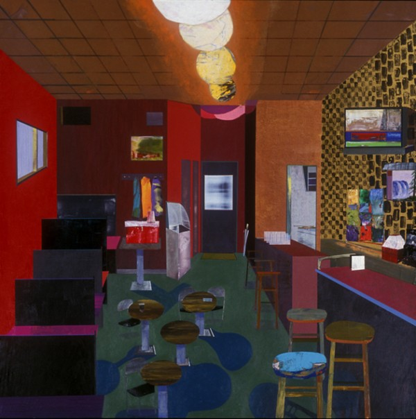
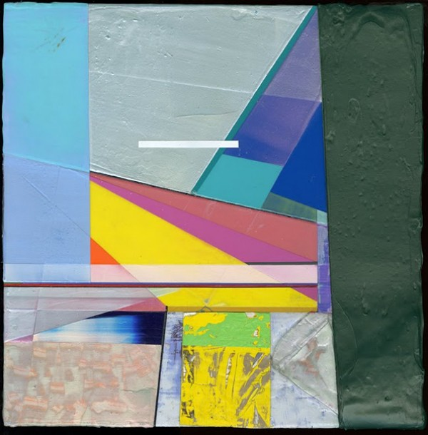
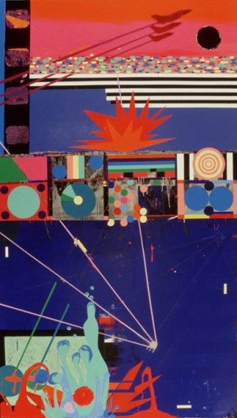
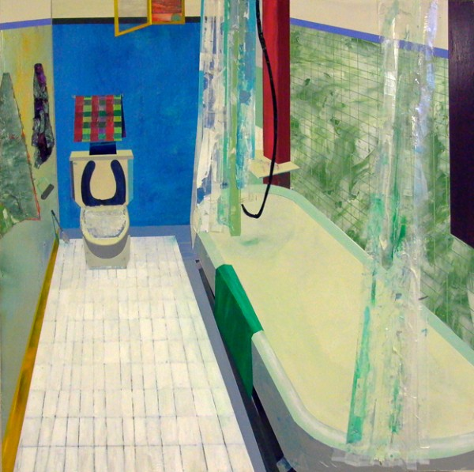
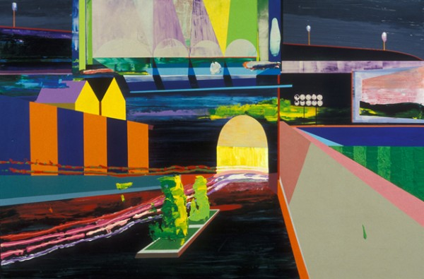
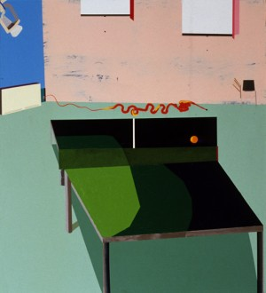

-
Faux Naivety: Interview with Michael Perrone
by Idiom January 4, 2011
Michael Perrone is a Brooklyn-based painter and sculptor. He has mounted two solo shows at Michael Steinberg Fine Art in New York City: Home and Away, in May 2006 and The Last Picture Show , in September 2008. His work has also been featured in The New Yorker , Elle Decor , O at Home, and Time Out New York. Debora Kuan visited Perrone’s studio in Red Hook recently to discuss the trajectory of his work, why he feels exuberance on the New Jersey Turnpike, and the power of an empty room. The conversation continued over email in the week that followed the studio visit.
Debora Kuan: I see a lot of Precisionist ideas in your work. Can you talk about that? Are you interested in celebrating industry, modernism, or urban America?
Michael Perrone: Yes, early on I felt a strong kinship with many of the Precisionist painters, most notably Charles Sheeler, Rawlston Crawford, and Niles Spencer. I can’t remember exactly when I became aware of them; however, I’m fairly certain that I had already been engaged with that way of painting before I knew about them. At first, the similarity was mostly the visual language: the straight-edge pencil line (which I would often leave or re-articulate on the surface of the painting), the simplification of shapes and the flattening of the shapes by reduced value modulation, the use of muted colors, and the overall abstract quality that coexisted with the representational image. Once I was made aware of the Precisionists, I felt completely in line with their interests, as if I had been hanging out with them in the 1930s. Additionally, I was living in Pennsylvania at the time and studying with John Moore, whose work was also influenced by these artists, and both these factors further enhanced my connection with them.During this time, while at graduate school at the University of Pennsylvania in Philadelphia, I became more focused on the industrial landscape. This was somewhat inspired by driving along the New Jersey Turnpike, from NY/NJ to Philadelphia. While driving I became very interested in the industrial forms: the factories, the billboards, the water towers, the high tension wire towers, even the cell phone towers which are disguised as trees. I began to celebrate these industrial icons in my work. The paintings became amalgams of different places: a water tower from here, a retaining wall from there, specific factory buildings and made-up ones too. I was trying to revel in the man-made world and thinking about these structures and forms as a new sublime. This interest grew, and in the work I would play the ‘natural’ elements against the man made elements. I was trying to question notions of beauty by imagining a future in which we would have forests of water towers and actually be content with that. As this idea evolved in the paintings, nature vs. the man-made, I began to paint the competing parts in different ways. It seems like a simple idea: I painted the ‘natural’ elements with a thick, textured, more tactile paint quality, and the man-made elements with a harder-edged, slicker, and glossier surface in an attempt to mimic the machine-made.
DK: I think of you as a painter with a very distinct color vocabulary. But your color values—which are exuberant and bright–appear almost radical in today’s economically depressed climate. You seem to be painting defiantly against the prevailing mood, which I find very interesting. For instance, the colors in your geometric abstractions remind me of Peter Halley’s conduit paintings, but he began those in the Eighties. It seems quite another thing to be painting ecstatically bright abstractions now. Can you talk about those choices?
MP: My initial color decisions came out of two specific, non-conceptual places. After my first semester of graduate school, I began to make work specifically to upset my inner aesthetic sensibilities. I started to paint with bright, highly saturated colors as a way to do the opposite of what felt natural and comfortable to me: up to that point muted colors, inspired by the work of Giorgio Morandi. I basically grayed down everything. I was a value painter. For some reason, these subdued colors felt right to me. So that’s what I used and I managed to get pretty good at using those muted colors. In an attempt to upset myself, to force myself to do something different, something that I wasn’t good at, I began to use highly saturated, bright colors. Interestingly enough, this development coincided with my appointment as the teaching assistant for a color theory class (largely based on Josef Albers’ Interaction of Color) during the second semester of my first year at Penn. These two events were coincidental, but they forced me to spend that semester intensely engaged in color.
I was also using One Shot sign painters paint. These oil enamel paints are liquid and come in cans. There are many colors available… many that are at once bright, but also carry with them a nostalgia. For instance, these are the paint colors that your old high school gym lockers, metal school desks, and chairs were painted with. I began using these paints largely for their fluidity, and for the fact that it dried with a high gloss surface. These paints don’t mix very well, so I was often painting directly out of the can, and painting the shapes with a flat, unmodulated solid color. Some people felt my paintings of this time were reminiscent of Colorforms (those plastic decals from the ‘70s). I guess the important fact is that I was not blending or mixing color, but instead playing one color off another. The visual language was more like collage then painting.
This was the spring of 2003, and my imagery at that time was based around the then looming war with Iraq. I did have some ideas about the celebratory colors I was using and how that conflicted with my imagery. Additionally though, I was interested in how the war was often discussed in terms of sports vernacular. The visual language I was using was very flat and graphic, much like what you would see on the side of a pinball machine–almost stenciled shapes.
After the Iraq War Paintings, I just carried the new color sensibility with me into the next body of work, which is the work we began our discussion with: the industrial landscapes and then the nature vs. man-made paintings. I still think it’s a pretty simple idea, but the highly saturated color I was now using was perhaps just another way for me to talk about the synthetic. Additionally, at this time, I was trying to expand my ideas of what beauty was and what a painting could be. So this new palette that I began to use was also a way for me to push my own limits of what I thought was acceptable for a painting, what I considered beautiful. Basically, I combined my old interests in architecture and the landscape (geometry) with the new interest of color and I came out with something that was more than twice as interesting from where I started. This cycle of learning something new and then infusing it back into my older interests seems to be one that I keep repeating.
DK: You’ve mentioned another aspect of your interior work that I find interesting—the collage effect. Can you talk about that decision with respect to your various Iowa interiors—bowling alleys, bars, diners, etc.? I’ve been in all of those places, and realistically speaking, they look very different—much dimmer, older, dive-ier.
MP: After moving to Iowa City to start a teaching post as a Visiting Assistant Professor (The University of Iowa), I continued with the landscapes–now based on Midwest driving–and at some point I gave a slide talk at the University and a lot of people were curious about this painting that I had made in my final week of grad school, The White Room. This painting was different in that it was not an imagined landscape, but rather an interior of a specific personal place (the room where we held all of our critiques at Penn, which also had a ping pong table). That painting was a forerunner for the work that mostly comprised my two solo shows in New York: interior paintings of personal spaces or spaces that I spent time in. After giving that slide talk, I began to think more about why that painting sparked such interest in the audience. I also started thinking back to one of my professors at Penn, Alexi Worth, who had been very supportive of my landscapes, but also felt that they were too generic, that something was missing.
I wouldn’t say that I had any kind of epiphany at that point, but I can say that the comment from Alexi along with the interest from my Iowa colleagues naturally led me to try painting another one of the interiors. So, I did. That painting, Iowa Bathroom, set in motion my subject matter for the next three or four years.
In many ways, when I set out to make one of these interiors, I do start with the intention of capturing some essence of that specific place. Yet, ultimately what often happens is that the composition of the painting is very general, only a handful of shapes and minimal information. I then start filling in the details with blocks of color and then patterns and then more specific details, which are often taken from my memory of that space. Sometimes, during the painting process, I will revisit the space and stop and look, take mental notes, etc. Other times, I am working from memory of that place, but I am also allowing myself a certain sense of freedom to just make a painting. Allowing myself to use any color, no matter how ugly, like gold, or any texture, no matter how ridiculous, like cotton balls or architectural grass.
The places you mentioned–George’s, The Hamburg Inn, Colonial Lanes–I suppose in the hands of another painter (say, Edward Hopper, whom I love) would be handled in a more somber way. But for me, these places were places of great fun, and I suppose although I feel my paintings have some melancholic qualities to them (unpeopled stage sets waiting for action), my experiences in these places and my experience painting is one of tremendous joy.
DK: I’m glad you mentioned that—it’s true that an interior tends to evoke a kind of solemnity. After all, a room’s very purpose is to house people, and there aren’t any people in yours. I think that’s what rounds out the faux naivety in those scenes and gives them such depth—the interior naturally suggests the inner life and carries all the humanness that comes with inhabiting that space.
MP: The faux naivety that is sometimes associated with my paintings is completely unintentional. I do think I am an optimistic person, and idealistic, but my painting process is very much intuitive and impulsive. I basically make it up as I go. So the awkward scale shifts, the skewed perspective, the other elements in my work that might resemble a naive artist’s approach are not necessarily intentional. What is intentional is the fact that I give myself permission to make a mark, or create a shape, and then let it live, even if it is off or not completely accurate to the rules of linear perspective. I let it live and then modify the painting to correspond to it. I solve the puzzle as I make the puzzle.
Debora Kuan is a poet, writer, and art critic. Her writing on visual art has appeared in Art in America, Artforum, Culturehall, Paper Monument, and elsewhere
.